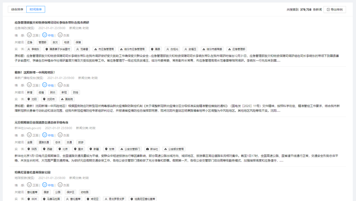
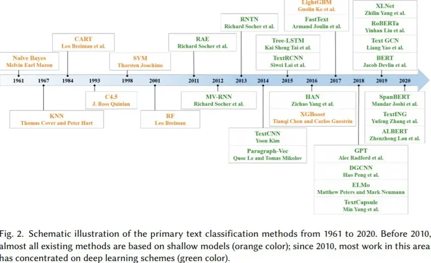
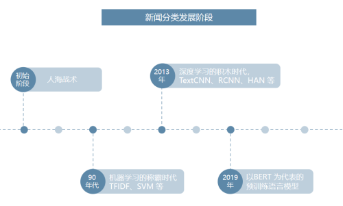
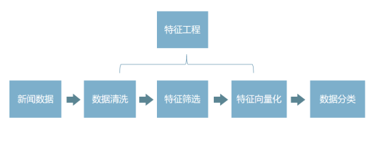
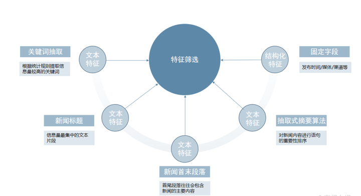
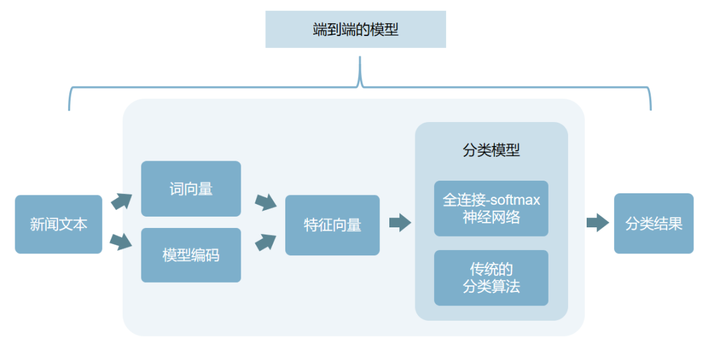

干货 | 日采100W新闻数据，如何实现新闻自动分类？
作者：keven
发布时间：2021/8/16 11:10:23
4411 人已阅读
摘要：干货 | 日采100W新闻数据，如何实现新闻自动分类？
信息爆炸的今天，个性化新闻推荐技术已经变成了许多新闻网站和App的关键技术。个性化新闻推荐技术的应用，不只可以减轻信息过载的问题，还可以提升用户的新闻阅读体验，提高用户粘性和留存率。
但这也对新闻媒体平台提出了更高的要求：不但需要高效地组织并获取信息数据，还需要系统地将新闻内容进行分类，利用先进的内容推荐算法和海量的用户数据，将用户真正感兴趣的内容推送至他们的首页。
我们熟知的字节跳动，旗下就有多款产品使用兴趣推荐机制，包括今日头条、抖音、火山小视频、西瓜视频等，这几款产品都在沿用同一套强大的算法推荐系统，只是根据业务场景不同，模型架构会有所调整。

在将进行个性化新闻推荐前，有一个非常重要的步骤，就是对新闻内容的分类。
八爪鱼有多年的数据采集和分类经验，帮助过众多新闻行业的客户完成新闻采集和分类的的需求。目前八爪鱼数据中台正是基于此类需求建立，包含情感分析、关键词抽取、实体抽取、内容摘要等，满足客户的各种分类需求。

新闻行业发展之初，分类是由人工处理的，但伴随着互联网和计算机行业的发展，人工处理局限性开始显露：
数据量激增：新闻数据来源众多，可能一分钟就有成千上万条新的数据产生；
人工成本高：数据量激增的情况下，需要付出更多的人力成本；
分类效率低：新闻数据时效性要求高，人工处理速度慢，效率低下。
而计算机处理可以很好地避免这些问题，在数据量激增的情况下，仍然能实现高效地处理和运转，节约人工成本。之前的文章中我们讨论过《一套私有化部署的新闻采集系统需要具备什么？》，今天我们来讨论一下如何利用计算机技术来实现新闻数据的自动分类：
✔ 新闻数据的分类经历过哪些发展阶段？
✔ 如何利用计算机完成对大量文本的分类归档？
✔ 新闻自动分类是怎么做到的，有哪些流程？
注：
1. 本文只描述比较通用的分类的流程和思想，不涉及具体技术选型和对比；
2. 新闻数据的常见处理包括分类和聚类，此篇主要讨论分类的流程，不对聚类过多赘述。
新闻分类的发展历程

以上图片来自是专业学者对于文本分类技术发展的总结，看起来略微复杂，我们可以简要将其总结为4个阶段：

初始阶段新闻数据有限，计算机也未大范围使用，因此这个阶段均为人海战术，使用人工对新闻进行分类；
90年代开始，伴随着互联网的发展，数据的体量快速积累，同时获取难度显著降低，以及计算机性能的快速提升，统计机器学习进入了一个快速发展的时代。此时的自然语言处理从语言学领域逐渐过度成为一个交叉学科，并且其中的统计数学占比越来越高，早期的一些算法如 TF-IDF 等开始展现出更大的价值；
近 10 年以来，随着 GPU 运算带来的并行算力提升，深度学习得到了长足发展，诸如 LSTM 在内的一批早在 90 年代提出的网络结构被广泛采用，在不少领域取得了统计机器学习所无法企及的效果。此时以CNN和RNN为基础的大量神经网络模型的提出快速丰富了深度学习在各场景下的应用，如LSTM、TextCNN、RCNN、HAN 等；
近两年，以BERT 为首的一批基于 Transformer 的预训练语言模型开始逐步占领自然语言处理的主流，其主要目的在于充分利用海量的无标注文本数据学习语言的基本规律，在各场景中实现使用少量的标注数据就可以得到更好的效果。
小结：深度学习为自然语言处理领域各应用场景的效果带来了飞跃式进步，但其运算量所带来的运算成本是巨大的，因而在实际落地中我们还是需要综合选用最合适的技术。
如何实现新闻的分类？
在获取到新闻数据后，对新闻进行分类还需要经过以下流程：

①数据清洗：过滤和筛除一些与新闻无关的符号或特殊字段，去除重复内容，提升文本质量，减轻系统负荷；
②特征筛选：根据业务需求，针对性地对关键词、新闻标题、新闻首尾段落等文本进行提取；
③特征向量化：将每篇新闻的特征汇总为一个固定长度的向量，以便分类算法进行运算。
④新闻分类：常规的新闻领域划分，如体育、财经、科技、娱乐等。
01. 任务场景
分类场景常用于常规的新闻领域划分：如体育、财经、科技、娱乐等，这样的分类是确定而具体的，对应于传统新闻媒体的各新闻版块。
人民网首页新闻分类
分类任务属于机器学习中的有监督学习任务，需要使用标注数据进行模型训练。不过如果需要的分类类别是前面提到的常规新闻领域划分，那么我们可以直接通过采集主流媒体上相关板块的新闻作为训练数据，而无需额外的人工标注。
02. 特征工程
在分类之前，有一个必要且直接影响最终效果的前置工作——特征工程，特征工程分为数据清洗、特征筛选和特征向量化三个环节。
由于新闻的文本内容较长，直接使用全文作为任务的输入难以实现较好的分类效果。数据清洗和特征筛选是自然语言处理任务中常规的预处理流程。目前而言，自然语言处理落地场景中模型和算法的选择空间相对有限，而数据的预处理往往是决定业务能否成功落地的关键因素。
1) 数据清洗
数据清洗主要用于提升文本质量，统一和对齐各个数据渠道的文本格式，具体而言其内容包括：
◆ 滤除或统一替换特殊符号，如 html 标签，emoji 表情等；
◆ 去除与新闻类别无关的特殊前缀、小尾巴等文本（如网站名）；
◆ 去重，减少运算量，同时避免重复文本影响聚类算法的聚类中心，对于海量长文本的去重可以参考 SimHash算法；
2) 特征筛选

特征筛选则是根据业务需求，针对性地对特定内容进行提取，以得到后续模型或算法聚焦与关注的特征，对于新闻数据，通常可以分为以下几种：
✔ 文本特征
◆关键词抽取：根据统计规则提取信息量较高的若干关键词，常用的实现可以参考：
• 基于 TextRank 的关键词提取
• 基于 TF-IDF 的关键词提取
◆ 新闻标题：新闻标题是信息量最集中的文本片段，大多数新闻分类都会使用到该信息；
◆ 新闻的首尾段落：因为新闻的成文较为规范，首尾段落往往会包含新闻的主要内容，但是需要注意某些网站的首尾段落可能包含一些固定模板，在前置数据清洗流程中要注意进行相应的处理；
◆ 抽取式摘要算法：抽取式摘要算法可以理解为对新闻内容进行语句的重要性排序，从文章中抽出一些重要的句子，从而代表整篇文章的主要内容，语句的重要性排序同样是基于上述的关键词抽取、新闻标题、新闻的首末段落等步骤来实现的，一些开箱即用的摘要算法可以参考：
• sumy：提供了若干种文章的摘要生成算法、策略
✔ 结构化特征（非文本）
◆发布时间:发布时间是判断新闻归属分类的重要参考依据
◆ 发布媒体、渠道等
3) 特征向量化
经过数据清洗和特征筛选，我们对每篇新闻处理后，得到了其最具代表性的文本特征及结构化特征，这部分特征的质量可以通过简单的人工验证来进行有效性判断，即人可以在不阅读原文的情况下，仅通过这部分特征判断出该新闻的归属类别。
在运算文本数据的过程中，我们会遇到两个问题：
①系统进行的是数学运算，需要数值类型的数据，而文本不是数值类型的数据；
②运算需要结构化数据，而文本是非结构化数据。
我们需要将文本转化为数值特征向量和结构化数据，用固定长度的数值向量来表示每篇新闻。
因此，特征向量化可以简单理解为：将每篇新闻的特征汇总为一个固定长度的向量，以便分类算法进行运算。这个向量所处的空间被称为特征空间（feature space）。上述向量在机器学习中被称为特征向量（feature vector），这个翻译过程又称为特征嵌入（embedding）或向量空间映射（feature projection）。
如果特征工程实施得当，那么在特征空间中，两个特征向量的坐标越接近，意味着两个特征向量的内容相似度越高，越可能属于同个分类。
✔ 文本特征
◆词向量：词向量是自然语言处理中的一项基础工作，通过一个简单的神经网络训练得到，这个训练任务在训练中让拥有类似用法（上下文语境）的词对应相近的向量，进而使用这些向量来表征对应的字或词。这种做法基于语言学中的“情景语境”理论，该理论认为一个词的语义与其上下文语境是紧密关联的。常用的词向量类型有 Word2Vec，GloVe 等，根据不同的任务其性能略有差异。
• 文本编码：词向量将文本统一成为可以进行计算的一个语义特征向量，通过以下两种方式，我们可以进一步将其扩展得到一个文本段落。
• 字、词向量求和编码：对于短句（如新闻标题）或关键词特征，我们可以直接使用字、词向量进行求和，整合多个字、词的特征向量；
◆ 模型编码：而对于较长的文本，逐字（词）将词向量输入模型（如 Bi-LSTM, TextCNN 等），辅以注意力机制，可以更好的为输入的字词分配合理的权重，进而更好的保留长文本的主要特征；
✔ 非文本特征
◆ 非文本特征的向量化通常比较简单，如果需要输入模型进行计算，可以直接将数值化表示的特征拼接至文本特征向量；否则也可以不与文本特征向量进行整合，而是通过其他后续逻辑进行处理，例如按照时间进行分组等。
03. 新闻分类

在完成文本特征构建之后，分类任务就变得非常简单了，一般的做法可以是将特征向量传入一个简单的全连接-softmax 神经网络，或者使用传统的分类算法，如支持向量机（SVM）等。一般情况下，基于 全连接-softmax 神经网络的分类模型往往会与编码模型整合成为一个端到端的模型；考虑到某些编码模型资源消耗较大，如 BERT，也可以在一个资源较丰富的设备上运行一个通用的特征编码模型，实现多项目复用一套编码模型。
基于特征向量，除了完成前面的分类任务，我们还可以通过相似性度量进一步对新闻的相似程度进行量化对比。在自然语言处理中我们通常使用余弦相似度。
分类完成后，就可以利用内容推荐算法和用户画像，进行个性化新闻推荐。
参考资料：
[1]A Survey on Text Classification: From Shallow to Deep Learning,2020；
[2]Semi-supervised recursive autoencoders forpredicting sentiment distributions；
[3]Semantic compositionality through recursive matrix-vector spaces；
[4]Recursive deep models for semantic compositionality over a sentiment treebank.
最后插入一个小广告：
八爪鱼新闻数据中台历经 8 年沉淀，已汇集海量境内外新闻网站及自媒体平台数据，产品采集范围覆盖全球 55 个国家和地区，31 个语种，日增数据近 4000 万条。
1. 全球主流媒体覆盖率高
八爪鱼支持海内外超 1100 家主流媒体的实时监测，战略布局全球市场。
2. 国内各类数据应用范围广
1) 新闻类数据：已覆盖包括但不限于人民网、新华网等央媒党媒、 地方政府机构网站以及今日头条、网易等新闻聚合平台累计，超 2000 个平台，每日增量数据超 15 万条（经清洗入库后二次筛选的精准数据）；
2) 社交类数据：已覆盖包括但不限于微信、微博、小红书、抖音、bilibili、 知乎等 14 个社交平台，每日增量数据超 1500 万条；
如果想了解更多八爪鱼新闻数据中台相关信息，可以添加客服了解详情：
或扫码提交下方表单，预约演示：
服务提示